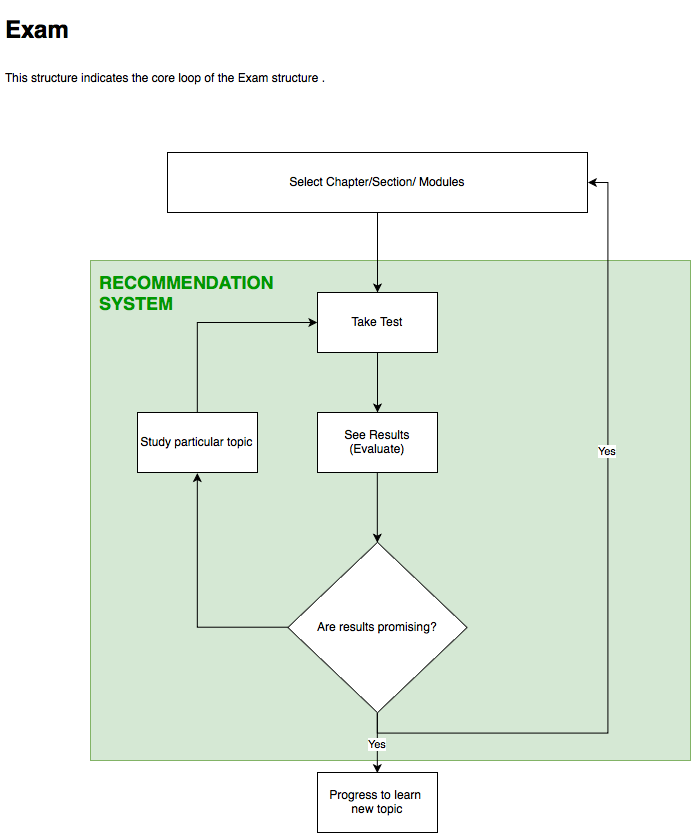
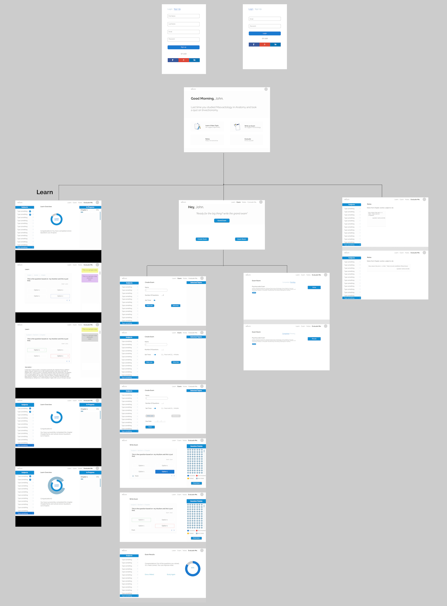

In 2018, I worked on Next fellow, a platform for doctors who are preparing for NEET exam. The primary focus was to deliver best learning experience to users and motivate them to study effectively. My role in this project was to create early stage concepts, wireframes and interactions.

Problem Statement
We wanted to built a product that helps medical students to prepare for NEET examinations.
Research
Before I jumped into the project, I wanted to understand the mission and vision our stakeholders have for the company and then the product. I also wanted to understand the revenue model they had in mind along with the future plans of the product. I believe that being on the same page with the stakeholders would help me to understand the product from a broader spectrum.
Once I got boarded, the next step I took was to understand our audience base.
- What is our user base?
- What are their goals?
- What are the challenges that they face?
- What makes them happy?
- Why should they use our product?
To find answers to the above questions, I started to interact with doctors in my circle to understand the patterns of examinations and through my friends in the medical field I started reaching out to medical students as well. Its also important to mention that the stakeholders are doctors who've been in the position of our users during their time. Finding answers to all the questions we had helped us in positioning the service and hence the design process.
Competitor Analysis
Even though we didn't have many competitions in the targeted segment apart from Marrow, we asked ourself a question that, "what if Udacity wants to get into this field?" and then how can we be a platform that our users would love to get back? We also wanted to ensure that our users are motivated as the competition rate of MOOC causes are merely 5%, and we are providing an online learning platform as well.
This phase provided us lots of takeaways using which we could improve users experience in the product.
Architecture
This isn't information architecture, that comes in our design stage. The architecture was more on the components that we wanted this product to work with or rather I should say, this is what I wanted to be the core loop of the product.

Design
Once we got equipped with all the required elements, we proceeded to start designing.
1.Proposition
A platform for medical graduates which would help them to prepare for NEET, by allowing them to learn through questions and evaluate by taking tests.
2.Concept
- We will design a cross platform service.
- The user should be able to learn any chapter, Take exams on chapters or any modules he/she wants to
- The user should be able to participate in weekly exams triggered by the product.
- Users will be assisted by a recommendation system, which would recommend users about the exams they took based on the topics they learned and the duration they learned to ensure that users are learning efficiently.
- We also want to introduce groups, as friendly competitions and collaborations would motivate users to study effectively
3.Structure
With learn and exam being the core structure, we designed the following: This is done by mainly 3 models:
1.Learn

2.Exam

3. A recommendation system comprising Learn and Exam
Based on the structure we created a component, which inform users based on the inputs.

4.Information
To achieve seamless integration of the modules mentioned above, we had to make sure about the information required for each model to function. To achieve this, I collaborated with our backend programmer and accordingly he crafted the technical architecture.
Here are some of the variables that we considered.
1. How much a user studied in a particular topic?
- This information would help us in sending random challenges (Pop quiz) that lasts around 1min to 5min.
2. What's the efficiency of the user?
- We used this variable to understand how much a user knew about a particular topic to personalize the learning experience aiming to deliver maximum efficiency.
Once identifying each variable that needs to be sent to the backend is done, we carried out a red map analysis for each functionality to identify priority before crafting the information architecture.
5. Information Architecture
During this phase, we wanted to create a navigation system and information hierarchy using which users will be easily able to navigate. We used multiple cardsorting technique for creating the architecture

6.Interaction Design
Once we designed sitemap, we moved to design, how each process would look like, and how user would interact with the system to achieve his goal

The image above shows the steps user needs to do for
1. Learning and for
2.Creating an Exam.
While desiging the navigation system, once of the biggest challenge we faced was translating the entire application to
the handheld interface.
This was bit complicated for us as we wanted to give uses complete flexibility over choosing topics for an exam. For example, if a user wants to take an exam on a particular chapter from a subject A along with a specific section from subject B, we want him to do that. This flexibility is important as few topics are interrelated to some other topics and students should be able to create exams based on these topics.
This is how we solved the navigation system for choosing topics while creating exam in a handheld device.

From these sketches, we created a low-fidelity mockup.

Why is this important for me
Even though I've done a few freelance interaction designing during my college days, This is my first project on user
experience.
This project thought me about the importance of collaboration with other teams as the experience is all about how end
users felt the product.
Lastly, it taught me that regardless of the efforts entire team put into a project it can go beyond out of control.
Outcome
Eslurn got shelved due to a dispute between the stakeholders. However, the project got resurrected again as Nextfellow with a new team.


 @ruwaizrazak
@ruwaizrazak ruwaizrazak
ruwaizrazak